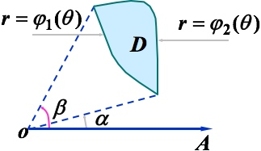

在平面里取一个顶点 \(O\)，叫做极点。引一条射线 \(OX\)，叫做极轴，这样便建立了极坐标系。对于平面里任意一点M

其中 \(|OM|=r\)，\(\angle XOM = \theta\)，这样 \(M\) 点的极坐标便是 \((r,\theta)\)。以 \(O\) 点为原点，\(OX\) 为 \(X\) 轴，过 \(O\) 点垂直 \(X\) 轴，作射线 \(OY\) 为 \(Y\) 轴，这样可以将极坐标转为平面坐标，如下图：

图中显然 \(|OA| = |OM| \sin\theta = r\sin\theta\)，\(|OB| = |OM|\cos\theta = r\cos\theta\)，所以 \(M\) 点的平面坐标为 \((r\cos\theta,r\sin\theta)\)。同理如果给出了点 \(N\) 的平面坐标为 \((x,y)\)，那么：
\[
\tan\theta = \frac{y}{x}\\
r^2 = x^2+y^2
\]
通过这样可以进行转换平面坐标转极坐标。
极坐标下的面积
如下图的圆中：

在扇形夹角和半径已知的情况下，很容易求出扇形的面积：
\[
\Delta \mathbf A = \pi r^2 \frac{\Delta \theta}{2\pi} = \frac 1 2 r^2\Delta \theta\\
\]
现在来看一个无规则形状：

我们可以利用黎曼和的知识对其进行切分，形成一个个小扇形，这个小扇形如果角度足够小可以将其当做半径为 \(r\) 圆形里面的一个扇形：
\[
\Delta \mathbf A \approx \pi r^2 \frac{\Delta \theta}{2\pi} = \frac 1 2 r^2\Delta \theta\\
\mathbb d\mathbf A = \frac 1 2 r^2\mathbb d \theta\\
\]
曲线内的任意扇形面积：
\[
\mathbf A_{part} = \int_{\theta_2}^{\theta_1} \frac 1 2 r^2\mathbb d \theta
\]
整个面积：
\[
\mathbf A = \int_{-{\pi}/{2}}^{{\pi}/{2}} \frac 1 2 r^2\mathbb d \theta
\]
二重积分的极坐标转换
二重积分的被积函数为 \(f(x,y)\)，令 \(x=r\cos\theta\)，\(y=r\sin\theta\)，所以被积函数可以转换为 \(f(r\cos\theta,r\sin\theta)\)，现在来看极坐标下的积分元素 \(d\sigma\) 的表示方法。设积分区域 \(D\) 为平面有界区域, 并且从原点发出的射线与 \(D\) 的边界线交点不多于两个, 则区域 \(D\) 被分割情形见下图.
图中分割的其中一小块的面积为：
\[
\begin{align*}
\triangle \sigma &= \frac 1 2 (r+\triangle r)^2 \triangle \theta - \frac 1 2 r^2 \triangle \theta \\
&= r \triangle r \triangle \theta + \frac 1 2 \triangle r^2\triangle \theta
\end{align*}
\]
去掉高阶无穷小 \(\frac 1 2 \triangle r^2\triangle \theta\)，可得：
\[
\triangle \sigma \approx r\triangle r\triangle \theta
\]
故：
\[
\mathbb d\sigma = r\mathbb d r\mathbb d\theta
\]
于是，二重积分
\[
\iint\limits_D f(x,y) \mathbb dx \mathbb dy = \iint\limits_D f(r\cos\theta,r\sin\theta) r\mathbb dr\mathbb d\theta
\]
极坐标下极坐标转化为累次积分的三种形式
如下区域特征：

其中：
\[
D = \left \{ \begin{array}\\
\alpha\le\theta\le\beta\\
\varphi_1(\theta)\le r\le \varphi_2(\theta)
\end{array} \right .
\]
现在区间 \([\alpha,\beta]\) 上任意取定一个 \(\theta\) 值，\(D\) 上的极径 \(r\) 从 \(\varphi_1(\theta)\) 变到 \(\varphi_2(\theta)\) 。又 \(\theta\) 是在 \([\alpha,\beta]\) 上任意取定的，所以 \(\theta\) 的变化范围是 \([\alpha,\beta]\) 。这样就可看出，极坐标系中的二重积分的公式为：
\[
\begin{align*}
\iint\limits_D f(x,y) \mathbb dx \mathbb dy &= \iint\limits_D f(r\cos\theta,r\sin\theta) r\mathbb dr\mathbb d\theta\\
&= \int_{\alpha}^{\beta}\Big[\int_{\varphi_1(\theta)}^{\varphi_2(\theta)} f(r\cos\theta,r\sin\theta)r\mathbb dr\Big]\mathbb d\theta\\
&= \int_{\alpha}^{\beta} \mathbb d\theta \int_{\varphi_1(\theta)}^{\varphi_2(\theta)} f(r\cos\theta,r\sin\theta)r\mathbb dr\\
\end{align*}
\]
再看两个上图的特例情况：
\(0\le r \le \varphi(\theta)\)，\(\alpha\le \theta\le\beta\)：

\[
\begin{align*}
\iint\limits_D f(x,y) \mathbb dx \mathbb dy = \int_{\alpha}^{\beta} \mathbb d\theta \int_0^{\varphi(\theta)} f(r\cos\theta,r\sin\theta)r\mathbb dr\\
\end{align*}
\]\(0\le r \le \varphi(\theta)\)，\(0\le\theta\le 2\pi\)：

\[
\begin{align*}
\iint\limits_D f(x,y) \mathbb dx \mathbb dy = \int_{0}^{2\pi} \mathbb d\theta \int_0^{\varphi(\theta)} f(r\cos\theta,r\sin\theta)r\mathbb dr\\
\end{align*}
\]